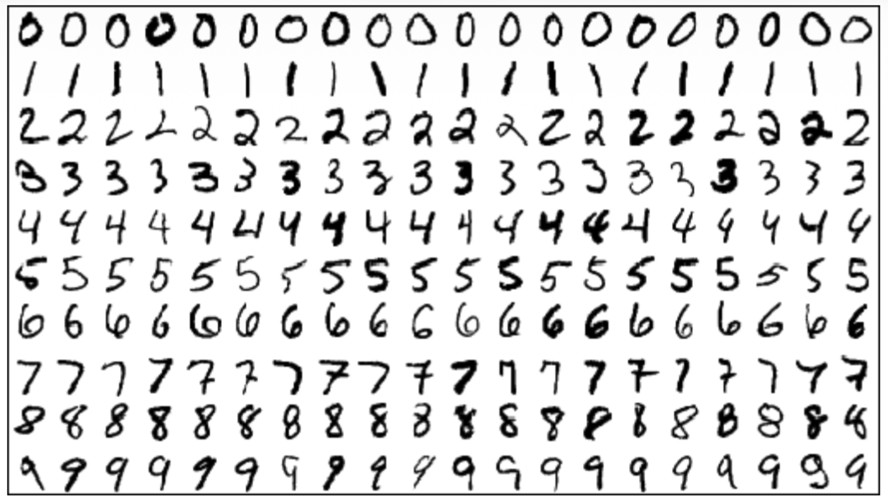
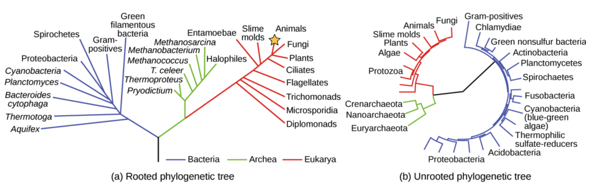
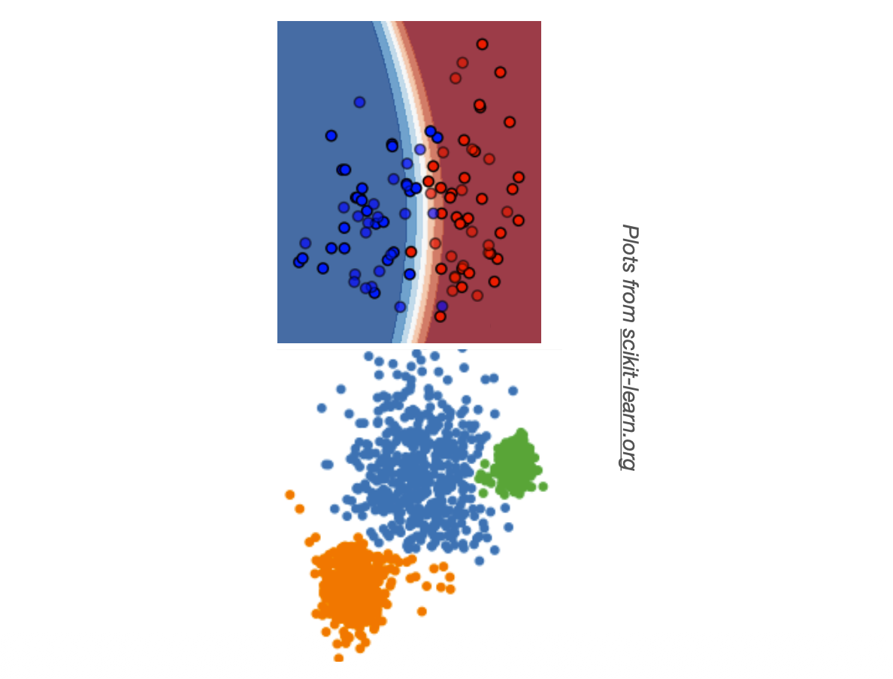
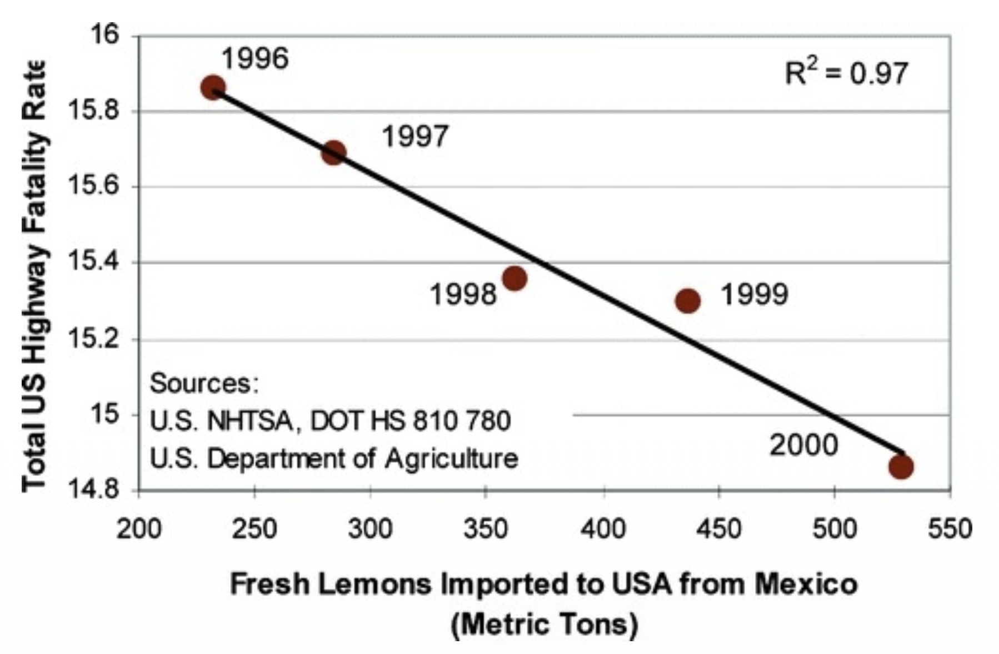
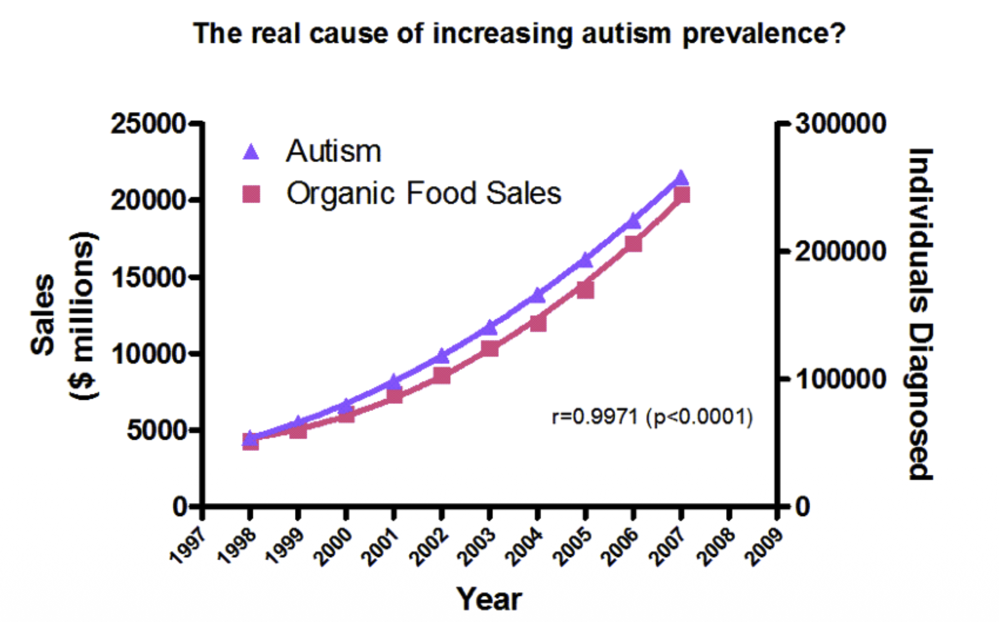
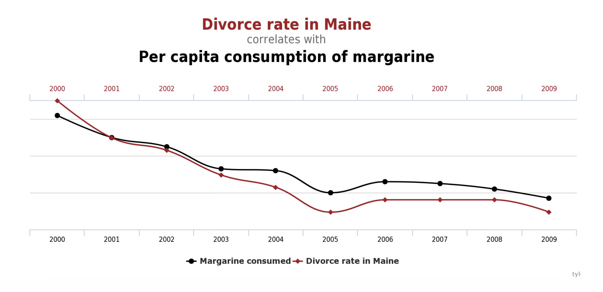
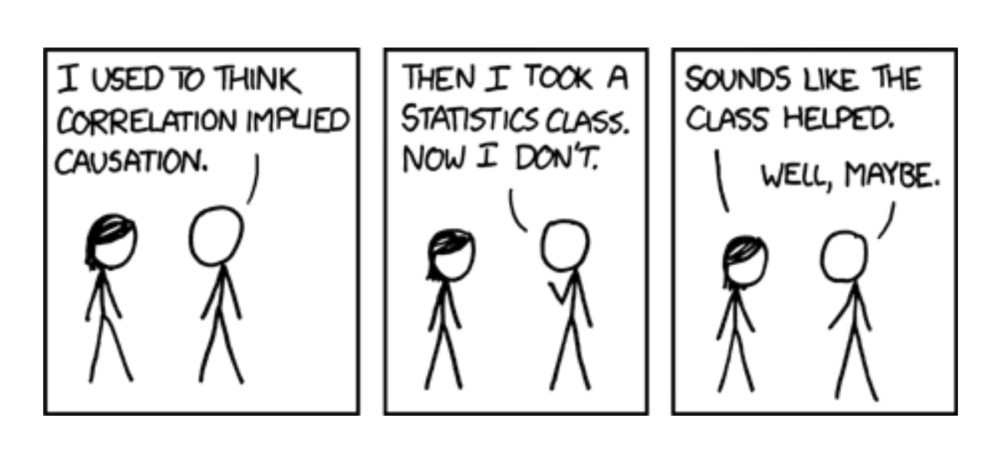
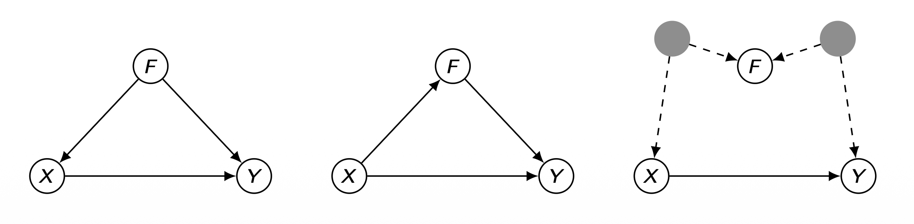
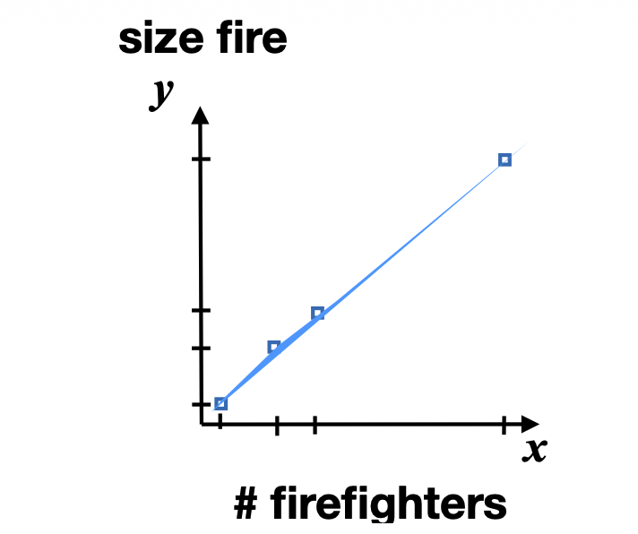

이번 포스트는 SNU 데이터사이언스대학원(GSDS) 이상학 교수님의 인과추론(Causal Inference) 강의 첫 시간 자료를 정리한 글입니다. 본 강의 자료는 컬럼비아 대학교 Elias Bareinboim 교수님(Judea Pearl의 제자)의 강의를 기반으로 구성되었습니다.
1. 머신러닝 간략 복습 (A Brief Review for Machine Learning)
본격적인 인과추론에 들어가기 전, 우리가 익숙한 머신러닝의 지형도를 먼저 복습합니다. 이는 뒤에서 “ML은 인과 사다리의 어느 층에 위치하는가?” 라는 질문에 답하기 위한 사전 작업입니다.
1.1. 왜 머신러닝을 공부하는가? (Why Study Machine Learning?)
머신러닝의 동기는 다음과 같이 정리됩니다.
- AI/ML은 지능형 시스템을 설계하고 분석하는 학문입니다.
- 지능적 행동에는 지식(knowledge) — 즉 환경이나 현실에 대한 모형 — 이 필요합니다.
- 그런데 특정 과제에 필요한 지식을 사람이 일일이 명시적으로 기술하는 것은 매우 어렵거나 종종 불가능합니다.
- 그렇다면 지식을 어떻게 획득할 것인가? → 데이터와 알고리즘을 통한 학습(learning) 입니다.
또한 학습은 다음과 같은 본질적 역할을 합니다.
- 학습은 에이전트의 의사결정 메커니즘을 수정하여 성능을 개선합니다.
- 도전 과제: 환경은 시간에 따라 변하므로, 변화와 예기치 못한 상황에 적응해야 합니다.
- 학습은 설계자가 전지(全知)하지 못한 미지의 환경(unknown environments) 에서 특히 필수적이며, 지저분하고 현실적인 데이터(messy, real data) 에 유용합니다.
이로부터 다음과 같은 근본적 질문들이 도출됩니다.
- 학습 과정을 어떻게 특징지을 것인가?
- 사전 지식(prior knowledge)과 성능(performance) 사이를 어떻게 절충할 것인가?
- 시스템은 얼마나 강건(robust)하고 일반화(generalizable) 가능한가?
ML의 응용은 의료 진단, DNA 서열 분석, 스팸 필터링·사기 탐지, 자연어 처리(언어 모델), 이미지·영상 내 객체 추적, 자율주행, 로보틱스 등 사실상 모든 곳에 걸쳐 있습니다.
1.2. 머신러닝의 접근법: 고전적 학습 패러다임 (Classical Learning Paradigm)
고전적 학습 패러다임은 다음과 같은 가정 위에 서 있습니다.
- 현실에는 알려지지 않은 참 모형(true model) \(M\) 이 존재합니다.
- \(M\)은 특징 벡터(feature vector) \(x\) 로 표현되는 예시(examples)들을 생성합니다.
- 우리가 관심 있는 대상은 목표 함수(target function) \(f_M(x)\) 입니다.
- 입력은 인스턴스들의 집합 \(\{x^{(i)}\}_{i=1}^{N}\) 입니다.
- 학습(training) 단계: 입력을 사용하여, 가설 공간 \(H\) 안에서 다음을 만족하는 가설 \(h \in H\) 를 찾습니다.
\[ h(x) \approx f_M(x) \]
- 이렇게 학습한 \(h\) 를 사용해 새로운 예시 \(x'\) 에 대해 \(f_M\) 을 근사합니다.
- 이때 가장 핵심적인 도전 과제는 바로 일반화(generalization) 입니다. 즉, 학습에 사용하지 않은 데이터에서도 잘 작동해야 합니다.

1.3. 지도학습 (Supervised Learning)
지도학습은 예시로부터 함수를 학습하는 문제입니다.
- \(f\) 는 알려지지 않은 목표 함수입니다.
- 하나의 예시는 입력-출력 쌍 \(\langle x,\, y = f(x) \rangle\) 입니다.
- 문제: 훈련 예시 집합 \(\{\langle x^{(i)}, y^{(i)} \rangle\}_i\) 가 주어졌을 때, \(h \approx f\) 인 가설 \(h\) 를 찾는 것.
- 이때 우리는 반드시 가설 공간(hypothesis space)을 선택해야 합니다. 예:
- 다항식 집합 (Set of polynomials)
- 결정 트리 (Decision Trees)
- 베이지안 네트워크 (Bayesian Networks)
- 심층 신경망 (Deep Neural Networks)
핵심: 가설 공간의 선택은 곧 귀납적 편향(inductive bias) 의 선택입니다. 어떤 함수 부류로 현실을 근사할 것인지에 대한 사전 결정이 학습 결과를 좌우합니다.
1.4. 비지도학습 (Unsupervised Learning)
비지도학습은 레이블 없이 샘플로부터 구조(structure)를 학습하는 문제입니다.
- 목표는 공간 \(X\) 의 구조를 이해하는 것입니다.
- 각 예시는 벡터 \(x \in X\) 입니다.
- 문제: 효율적인 통신, 미래 입력 예측 등에 활용할 수 있는 데이터의 표현(representation) 을 찾는 것.
- 따라서 우리는 표현 방식을 선택해야 하며, 대표적으로 다음이 있습니다.
- 군집(Clusters)
- 더 바람직한 성질(더 작은 차원, 선형 독립 등)을 가진 새로운 특징 공간(feature space)

1.5. 표준적 학습 문제들 (Canonical Learning Problems)
지금까지의 내용을 표준적인 문제 유형으로 정리하면 다음과 같습니다.
- 지도학습 (Supervised Learning): 입력과 그에 대응하는 원하는 출력의 예시가 주어졌을 때, 미래 입력에 대한 출력을 예측.
- 분류 (Classification): 목표 \(f(x)\) 의 치역이 범주형(categorical) (예: 숫자 인식, 음소, 구매/비구매)
- 회귀 (Regression): 목표 \(f(x)\) 의 치역이 연속형(continuous) (예: 주가 예측)
- 비지도학습 (Unsupervised Learning): 입력만 주어졌을 때 표현·특징·구조를 자동으로 발견.
- 군집화 (Clustering) (예: 천문학, 생물학)
- 차원 축소 (Dimensionality Reduction)
1.5.1. 확률론적 관점 (Probabilistic Perspective)
같은 문제들을 확률 분포의 언어로 다시 표현할 수 있습니다. 이 관점은 뒤에서 인과 사다리와 연결되므로 매우 중요합니다.
- 지도학습: 가설 \(h\) 를 학습하는 것은 조건부 분포 \(P(y\mid x)\) 를 추론하는 것과 동등합니다.
- (예: 신경망 출력단의 활성값, 결정 트리의 출력)
- 비지도학습: 표현을 학습하는 것은 주변 분포 \(P(x)\) 의 성질을 추론하는 것과 관련됩니다.

결정적 한 문장: \[\text{"We learn to imitate \underline{aspects} of the underlying (static) \underline{reality}!"}\] 즉, 우리는 정적인(static) 현실의 어떤 측면을 모방(imitate) 하도록 학습할 뿐입니다. 여기서 “측면(aspects)” 과 “현실(reality)” 에 밑줄이 그어져 있다는 점에 주목하세요. 이는 ML이 현실의 전체가 아니라 관측된 단면만을, 그것도 고정된 분포 하에서 흉내 낸다는 한계를 암시합니다. 바로 이 지점이 인과추론이 파고드는 틈입니다.
1.6. 강화학습 (Reinforcement Learning)
- 레이블된 예시가 없습니다.
- 대신 환경(현실)과 상호작용하며 온라인으로 샘플을 수집합니다.
- 응용: A/B 테스트, 계획(planning)·게임 플레이, 로봇 제어
- 본질적 절충: 탐험(exploration) – 활용(exploitation) 트레이드오프
- 예: 화성에서 특정 과제를 수행하려는 로봇
RL은 단순히 보는 것을 넘어 행동(action) 을 통해 환경을 바꾼다는 점에서, 뒤에 나올 인과 사다리의 Layer 2(개입) 와 자연스럽게 연결됩니다.
2. 이 수업에서 새로운 것은 무엇인가? (What is New in This Course?)
여기서 강의는 결정적인 질문을 던집니다.
“Is anything missing in this picture?” — 이 그림(머신러닝의 지형도)에서 빠진 것은 없는가?
지금까지의 ML은 모두 “현실을 모방” 하는 데 초점이 맞춰져 있었습니다. 그러나 우리가 던지고 싶은 질문 중 상당수는 아직 실현되지 않은(not yet realized) 세계 에 관한 것입니다. 이것이 이 수업이 다룰 새로운 차원입니다.
3. 개념적 기초 (Conceptual Foundation)
3.1. 인지적 관찰: 인간의 세 가지 능력
인간의 인지 능력은 다음과 같이 점진적으로 쌓이는 세 층위로 관찰됩니다. 슬라이드에서는 human: sensors + agency + retrospection 으로 표현됩니다.
- Layer 1 — 감각 (sensors): 세계를 관찰(observe) 하고 ‘다음’ 단계를 추론하는 능력.
- Layer 2 — 행위 (agency): 세계에 개입(intervene) 하여 그것을 변화시키는 능력.
- Layer 3 — 회고 (retrospection): 우리가 했던(그리고 하지 않았던) 일을 돌아보고(reflect), 새로운 행동을 추론하는 능력.
이 세 층위가 바로 다음 절의 핵심 개념인 Pearl의 인과 사다리(PCH) 의 인지적 토대가 됩니다.
3.2. Pearl의 인과 사다리 (Pearl’s Causal Hierarchy, PCH)
위 세 가지 인지 능력 — 감각·행위·회고 — 을 형식화한 것이 Pearl의 인과 사다리(PCH) 입니다. PCH는 이 강의 전체를 떠받치는 가장 중요한 개념적 골격입니다.
3.3. 아직 실현되지 않은 세계에 대한 추론 (Inferences About Different, Not Yet Realized Worlds)
강의는 다음 질문을 시각적으로 전개합니다.
“How to do inferences about different, not yet realized worlds?” (서로 다른, 아직 실현되지 않은 세계에 대해 어떻게 추론할 것인가?)
그 논리적 전개는 다음과 같습니다.
- (1단계) 기존 ML/통계: 실제 세계/자연(Real World/Nature) 이 데이터(Data) 를 만들어 내고, AI/ML·통계(Inference) 가 이 데이터로부터 새로운 지식(New Knowledge) 을 얻습니다.
- (2단계) 문제 제기: 그런데 우리가 알고 싶은 것이 실현되지 않은 대안적 현실(Alternative Reality) 이라면? 그곳에는 데이터가 없습니다(No Data). 통계만으로는 접근할 수 없습니다.
- (3단계) 해법: 이 간극을 메우는 것이 바로 인과 모형(Causal Model) 입니다. 인과 모형은 별도의 지식(knowledge) 을 추가로 받아들여, 데이터가 존재하지 않는 대안 세계에 대해서도 새로운 지식을 추론하는 인과추론(Causal Inference) 을 가능하게 합니다.
핵심 통찰: 데이터만으로는 부족합니다. 인과추론은 항상 데이터 + (인과적) 가정/지식 의 결합을 요구합니다. 이는 강의 전반에서 반복될 주제입니다.
4. 큰 그림: Pearl의 인과 사다리 (Big Picture: Pearl’s Causal Hierarchy)
이제 PCH의 세 층위를 구체적인 기호·활동·전형적 질문 과 함께 정리합니다.
| Level (기호) | 전형적 활동 | 대응 ML | 전형적 질문 |
|---|---|---|---|
| 1. 연관 (Association) \(P(y\mid x)\) | 보기 (Seeing) | ML – (비)지도학습 (Deep Net, Bayes net, Hierarchical Model, DT) | What is? “X를 보는 것이 Y에 대한 내 믿음을 어떻게 바꾸는가?” |
| 2. 개입 (Intervention) \(P(y\mid do(x),\, c)\) | 하기 (Doing) | ML – 강화학습 (Causal Bayes Net, MDP, POMDP) | What if? “내가 X를 하면 어떻게 되는가?” |
| 3. 반사실 (Counterfactual) \(P(y_x \mid x',\, y')\) | 상상하기/회고 (Imagining) | 구조적 인과 모형 (Structural Causal Model) | Why? “내가 다르게 행동했더라면 어땠을까?” |
4.1. Layer 1: 연관 (Association)
- 기호: \(P(y\mid x)\)
- 활동: 보기(Seeing)
- 전형적 질문: “X를 관측하는 것이 Y에 대한 내 믿음을 얼마나 바꾸는가?”, “증상이 질병에 대해 무엇을 말해 주는가?”
- 이 층은 우리가 앞서 복습한 (비)지도학습 이 머무는 곳입니다. 순수하게 관측된 분포 위에서의 통계적 연관만을 다룹니다.
4.2. Layer 2: 개입 (Intervention)
- 기호: \(P(y\mid do(x),\, c)\) — 여기서 \(do(x)\) 는 변수 \(X\) 를 값 \(x\) 로 강제로 설정(개입) 하는 연산자입니다.
- 활동: 하기(Doing)
- 전형적 질문: “내가 X를 하면 무슨 일이 일어나는가?”, “내가 아스피린을 먹으면 두통이 나을까?”
- 단순히 아스피린을 먹은 사람들을 관측한 \(P(y\mid x)\) 와, 내가 의도적으로 아스피린을 먹이는 \(P(y\mid do(x))\) 는 일반적으로 다릅니다. 이 차이가 인과추론의 출발점입니다. 이 층은 강화학습, MDP/POMDP 에 대응합니다.
4.3. Layer 3: 반사실 (Counterfactual)
- 기호: \(P(y_x \mid x',\, y')\) — “실제로는 \(X=x', Y=y'\) 였는데, 만약 \(X\) 가 \(x\) 였더라면 \(Y\) 는 어땠을까(\(y_x\))?”
- 활동: 상상하기/회고(Imagining / Retrospection)
- 전형적 질문: “내가 다르게 행동했더라면?”, “내 두통을 멈춘 것이 정말 그 아스피린이었을까?”
- 가장 높은 층으로, 이미 일어난 사실과 모순되는(counter-to-fact) 가상의 세계 를 다룹니다. 이를 다루려면 가장 풍부한 모형인 구조적 인과 모형(SCM) 이 필요합니다.
4.4. 인과추론 = 계층 간 추론 (Cross-layer Inference)
PCH의 핵심 메시지는 다음과 같습니다.
\[\textbf{Causal Inference} = \textbf{Cross-layer inferences}\] (인과추론이란, 한 층에서 얻은 데이터로 다른(상위) 층 의 질문에 답하는 것이다.)
일반적으로 상위 층의 질문은 하위 층의 데이터만으로는 답할 수 없습니다. 그 간극을 메우려면 추가적인 인과적 가정(모형)이 필요합니다. 이를 과제 유형별로 정리하면 다음과 같습니다.
4.4.1. Task-type 1: 관측에서 개입으로
- 데이터: Layer 1 / 추론: Layer 2
- 예: “수업 시간을 더 이른 시간으로 바꾸면 학생들의 성적이 향상될까?” — 관측 데이터로부터 개입의 효과를 예측.
4.4.2. Task-type 2: 개입에서 개입으로 (전이)
- 데이터: Layer 2 / 추론: Layer 2
- 예: “이전 실험들의 결과를 활용하여 새로운 실험의 결과를 예측” — 한 실험 환경의 결과를 다른 환경으로 일반화(transportability).
4.4.3. Task-type 3: 반사실 추론
- 데이터: Layer 1, 2 / 추론: Layer 3
- 예: “문 #1 대신 문 #2를 골랐더라면 이겼을까?” — 실제 일어난 일과 다른 가상의 결과를 추론.
5. 과학적 관점 vs. 실용적 관점 (Scientific vs. Pragmatic Perspective)
인과추론을 연구하는 동기는 두 갈래로 정리됩니다.
- 과학적 관점 (Scientific Perspective)
- 자연과 인간을 이해하기 위함.
- 경험적 데이터, 논리/수학, 과학적 방법에 기반합니다.
- 실용적 관점 (Pragmatic Perspective) — 예: 경제학, 의학
- ‘진짜로’ 지능적인 시스템을 만들기 위함.
- 사회적·경제적·정치적 목표를 겨냥한 정책(policy) 을 설계하고 실행하기 위함.
6. 계층 간의 실질적 차이 (Practical Difference Between Layers)
이제 추상적인 사다리가 왜 실제로 중요한지 를, ’상관 vs 인과’를 혼동했을 때 벌어지는 사례들로 살펴봅니다.
6.1. 상관관계 vs 인과관계 (Correlation versus Causation)
다음은 강한 상관관계가 결코 인과를 의미하지 않음 을 보여주는 대표적(때로는 유머러스한) 사례들입니다.



이러한 사례들은 모두 다음 질문으로 수렴합니다.
“If correlation does not imply causation, then what does?” (상관이 인과를 함의하지 않는다면, 무엇이 인과를 함의하는가?)

7. 데이터 분석의 예시들 (Some Examples in Data Analysis)
마지막으로, 같은 데이터를 두고도 인과 구조를 모르면 정반대의 결론에 이를 수 있음 을 보여주는 두 가지 고전적 예제를 살펴봅니다.
7.1. 예제 1: 심슨의 역설 (Simpson’s Paradox)
출처: Simpson, 1951; Pearl(2000) 6장
어떤 약(drug, \(X\))이 환자의 생존(survival, \(Y\))에 도움이 되는지 분석한다고 합시다.
7.1.1. 전체 집단 (Aggregated) — 2×2 분할표
| 생존 (\(Y\)) | 사망 (\(\neg Y\)) | 합계 | 회복률 | |
|---|---|---|---|---|
| 약 복용 (\(X\)) | 20 | 20 | 40 | 50% |
| 약 미복용 (\(\neg X\)) | 16 | 24 | 40 | 40% |
| 합계 | 36 | 44 |
회복률을 계산해 보면,
\[ P(Y \mid X) = \frac{20}{40} = 0.50, \qquad P(Y \mid \neg X) = \frac{16}{40} = 0.40 \]
전체 집단에서는 약을 먹은 쪽이 회복률이 더 높습니다(\(50\% > 40\%\)). 즉, 약이 좋아 보입니다.
7.1.2. 성별로 층화하기 (Stratifying by Sex)
이제 같은 데이터를 성별(\(F\): 여성, \(\neg F\): 남성) 로 나눠 봅니다.
남성 (\(\neg F\))
| 생존 (\(Y\)) | 사망 (\(\neg Y\)) | 합계 | 회복률 | |
|---|---|---|---|---|
| 약 복용 (\(X\)) | 18 | 12 | 30 | 60% |
| 약 미복용 (\(\neg X\)) | 7 | 3 | 10 | 70% |
| 합계 | 25 | 15 | 40 |
여성 (\(F\))
| 생존 (\(Y\)) | 사망 (\(\neg Y\)) | 합계 | 회복률 | |
|---|---|---|---|---|
| 약 복용 (\(X\)) | 2 | 8 | 10 | 20% |
| 약 미복용 (\(\neg X\)) | 9 | 21 | 30 | 30% |
| 합계 | 11 | 29 | 40 |
각 성별 내부에서의 회복률을 계산하면,
\[ \begin{aligned} \text{여성: } & P(Y \mid F, X) = \tfrac{2}{10} = 0.20 \;<\; P(Y \mid F, \neg X) = \tfrac{9}{30} = 0.30 \\ \text{남성: } & P(Y \mid \neg F, X) = \tfrac{18}{30} = 0.60 \;<\; P(Y \mid \neg F, \neg X) = \tfrac{7}{10} = 0.70 \end{aligned} \]
7.1.3. 의사는 어느 표를 봐야 하는가? (역설의 핵심)
여기서 역설(paradox) 이 발생합니다. 부등호의 방향을 나란히 놓아 보면,
\[ \underbrace{P(Y \mid F, X) < P(Y \mid F, \neg X)}_{\text{여성: 약이 해롭다}}, \qquad \underbrace{P(Y \mid \neg F, X) < P(Y \mid \neg F, \neg X)}_{\text{남성: 약이 해롭다}} \]
\[ \textbf{but} \qquad \underbrace{P(Y \mid X) > P(Y \mid \neg X)}_{\text{전체: 약이 이롭다}} \]
- 남성에게도 약은 해롭고, 여성에게도 약은 해롭습니다.
- 그런데 전체로 합치면 약이 이롭게 보입니다.
- 그렇다면 어떤 환자가 왔을 때, 의사는 약을 처방해야 할까요, 말아야 할까요?
순수하게 데이터(분할표)만 봐서는 이 질문에 답할 수 없습니다. 같은 숫자를 두고도 “층화된 표를 보라”와 “합친 표를 보라”가 정반대의 처방으로 이어집니다.
7.1.4. 답은 데이터가 아니라 ’인과 구조’에 있다
강의는 이어서 “다른 이야기(different story)였다면 결과가 달라질까?” 라고 묻습니다. 정답은 데이터가 아니라 변수들 사이의 인과 구조(causal structure) 에 달려 있습니다.

- 만약 \(F\)(성별)가 약 복용과 생존 모두에 영향을 주는 공통 원인(교란자, confounder) 이라면 → 층화된 표 를 보고 \(F\) 를 조정(adjust)해야 합니다.
- 만약 \(F\) 가 약을 먹은 결과로 나타나는 매개자(mediator), 즉 \(X \to F \to Y\) 라면 → 오히려 \(F\) 를 조정하면 안 되고 합친 표 를 봐야 합니다.
결론: 데이터는 동일합니다. 어떤 표를 신뢰할지는 오직 인과 모형이 정해줄 수 있습니다. 이것이 인과추론이 통계와 결정적으로 다른 지점입니다.
7.2. 예제 2: 사소해 보이는 데이터 분석 (Trivial Data Analysis)
다음으로, 소방관 수(\(X\)) 와 화재 규모(\(Y\)) 의 데이터를 봅시다. (Thrun의 예시)
| 소방관 수 (\(X\)) | 화재 규모 (\(Y\)) |
|---|---|
| 10 | 100 |
| 40 | 400 |
| 60 | 600 |
| 200 | 2000 |
이 데이터는 완벽하게 \(Y = 10X\) 의 형태를 띱니다. 따라서 회귀식
\[ Y = \beta X + \beta_0 \]
은 완벽하게 적합(fit) 됩니다 (\(\beta = 10, \beta_0 = 0\), 잔차 0).

여기서 강의는 결정적인 질문들을 연달아 던집니다.
- \(X\) 와 \(Y\) 는 완벽하게 상관되어 있습니다. 그런데 \(X\) 가 \(Y\) 를 일으키는가(does X cause Y)?
- 소방관을 더 많이 보내면 화재가 더 커진다는 말인가? (상식적으로 아닙니다 — 화재가 클수록 더 많은 소방관이 출동하는 것이며, 사실은 화재의 심각도라는 공통 원인 이 둘 다를 끌어올린 것입니다.)
- 그렇다면 도대체 \(\beta\) 의 의미는 무엇인가(what is the meaning of \(\beta\))?
회귀계수 \(\beta\) 는 완벽한 예측(prediction) 을 주지만, 그것이 개입의 효과(intervention) — 즉 “소방관을 한 명 늘리면 화재가 얼마나 커지는가” — 를 의미하지는 않습니다. 이는 Layer 1의 도구(회귀)로 Layer 2의 질문에 답하려 할 때 발생하는 근본적 혼동입니다.
8. 그래서, 무슨 일이 일어나고 있는 걸까? (What’s Going On Here?)
강의는 다음 한 문장으로 마무리됩니다.
“What’s going on here??”
지금까지 본 모든 사례 — 페이스북과 그리스 부채, 레몬과 사망률, 심슨의 역설, 소방관과 화재 — 는 같은 교훈을 가리킵니다.
- 상관(association, Layer 1) 만으로는 개입의 효과나 반사실(Layer 2, 3) 을 결코 알 수 없습니다.
- 동일한 데이터라도 인과 구조(가정) 가 무엇이냐에 따라 정반대의 결론에 이를 수 있습니다.
- 따라서 우리는 데이터 + 인과 모형 을 결합하는 새로운 언어가 필요하며, 그 언어를 형식화하는 것이 바로 이 수업, 인과추론 의 목표입니다.
다음 강의에서는 이 인과 모형을 표현하는 핵심 도구인 인과 모형과 그래프(Causal Models and Graphs) 를 본격적으로 다루게 됩니다.